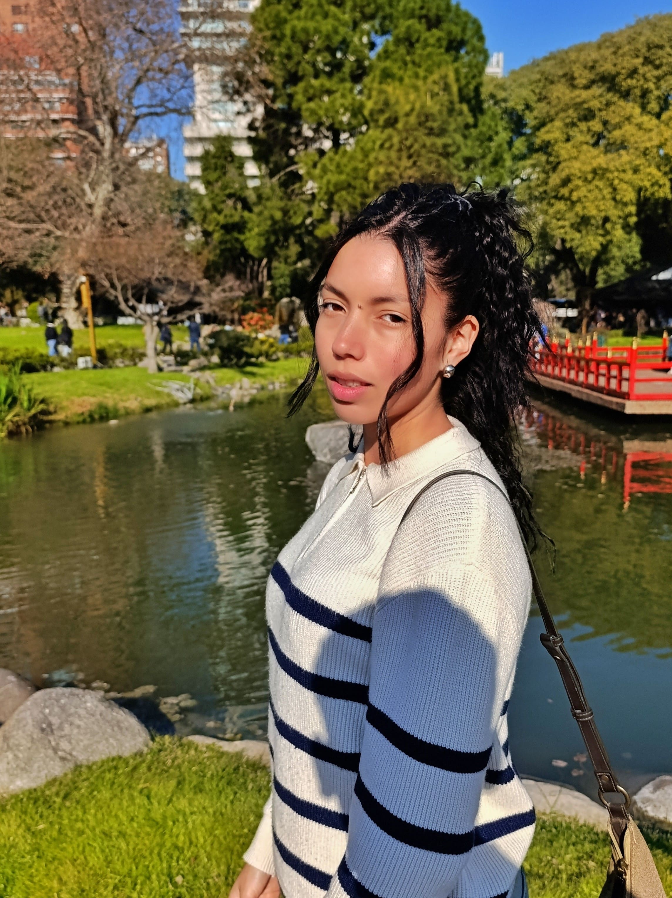
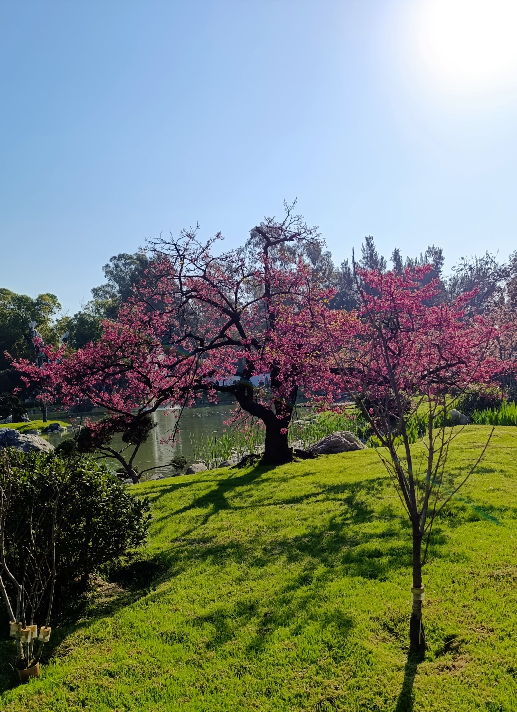
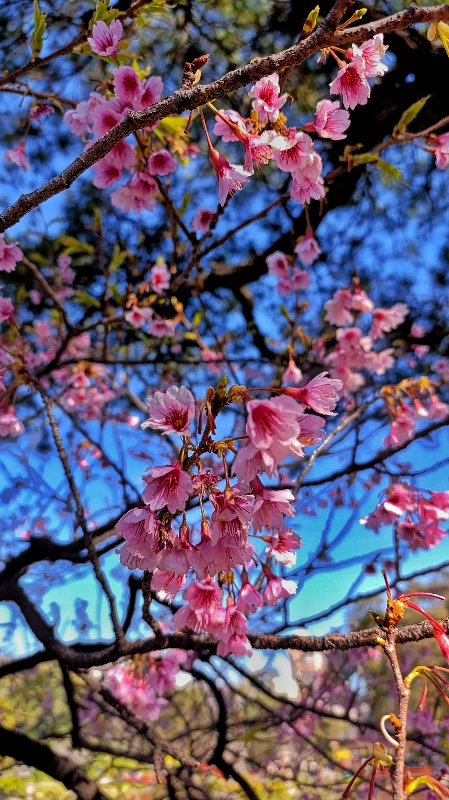
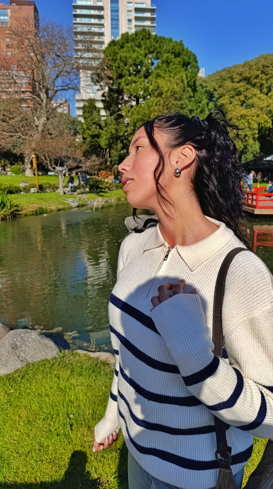

Sobre mí
Hola, soy Candela, tengo 23 años, exploro el mundo digital y soy amante de todo lo visual. Me encanta transformar ideas en algo que se vea lindo y funcione perfecto, desde códigos hasta fotos o videos. Esa pasión por lo visual me llevó a estudiar desarrollo web, porque me encanta el desafío de unir diseño, tecnología y creatividad. Soy curiosa por naturaleza: siempre quiero saber cómo funcionan las cosas detrás de escena. Me encanta aprender cosas nuevas, y disfruto cada desafío que me obliga a pensar diferente. Mi meta es seguir creciendo como profesional mientras mantengo viva mi chispa creativa.



